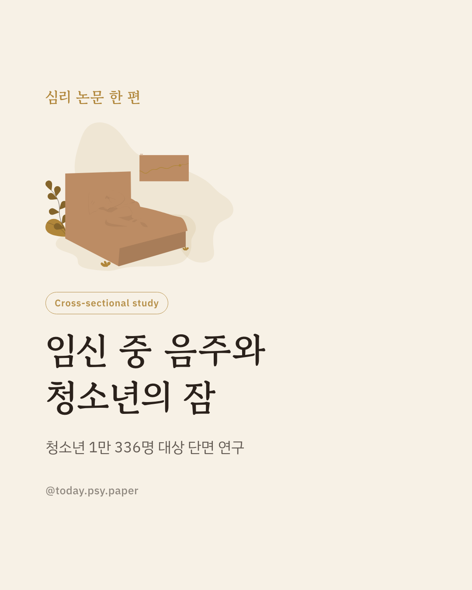
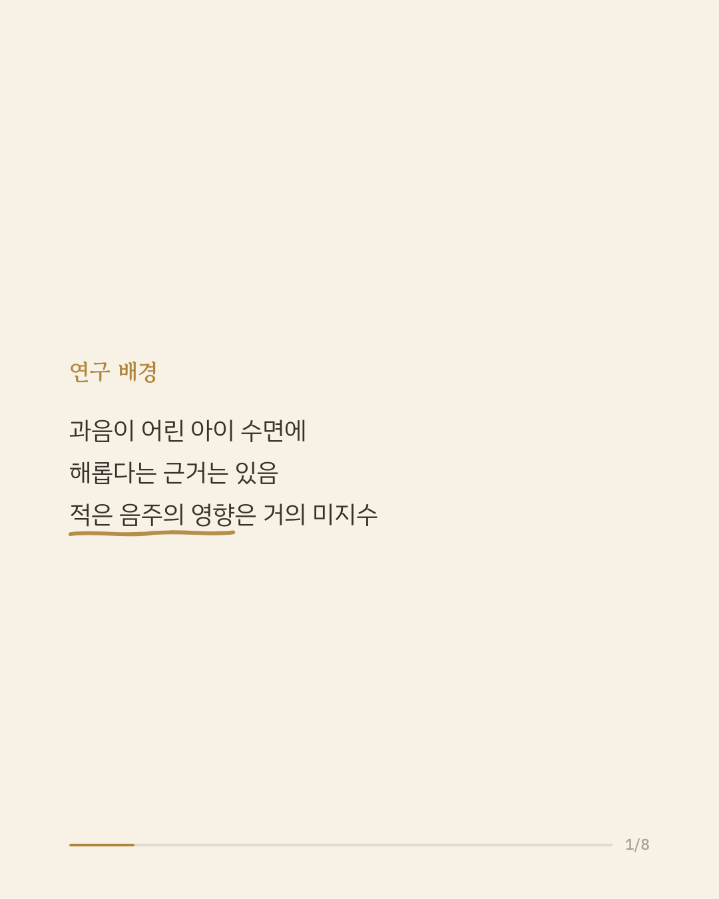
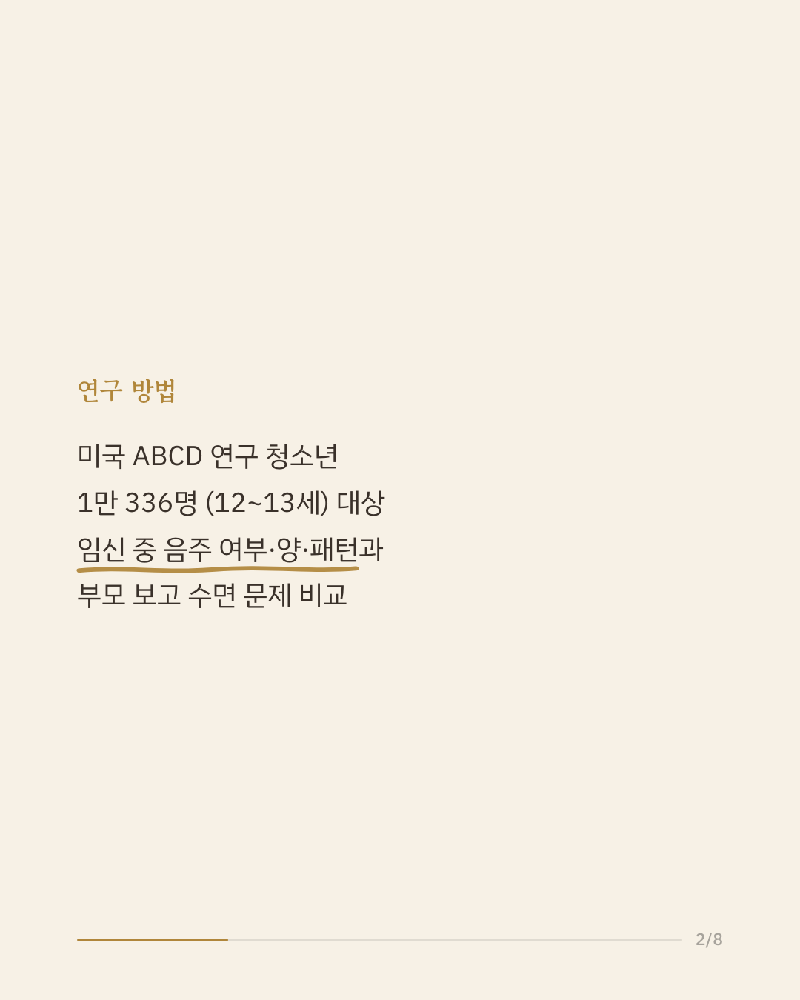
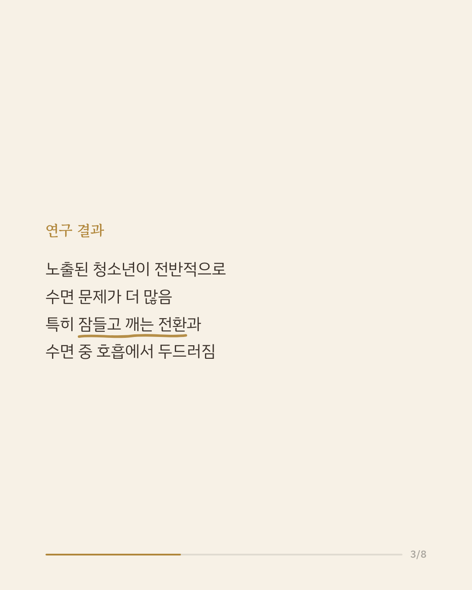
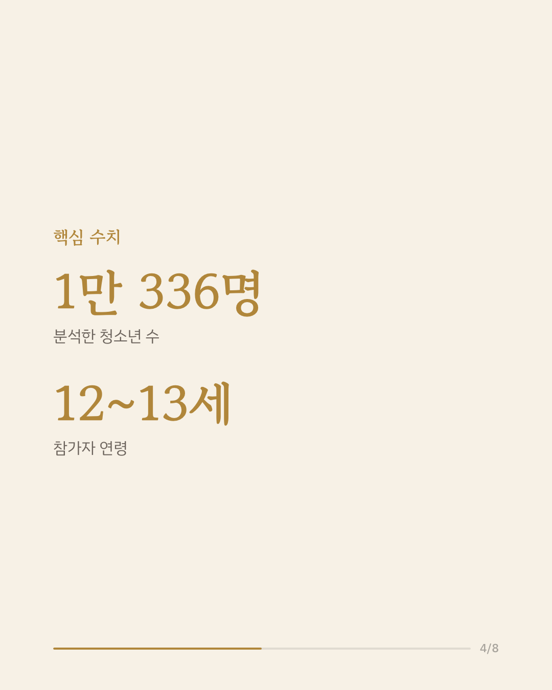
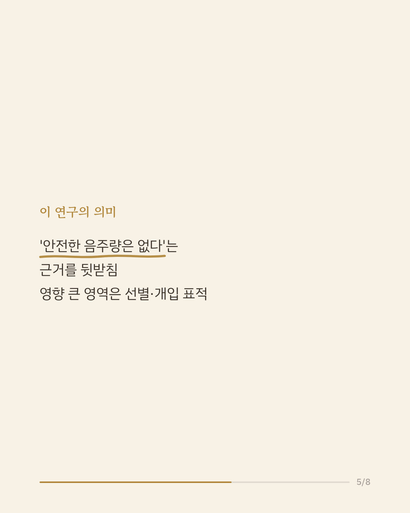
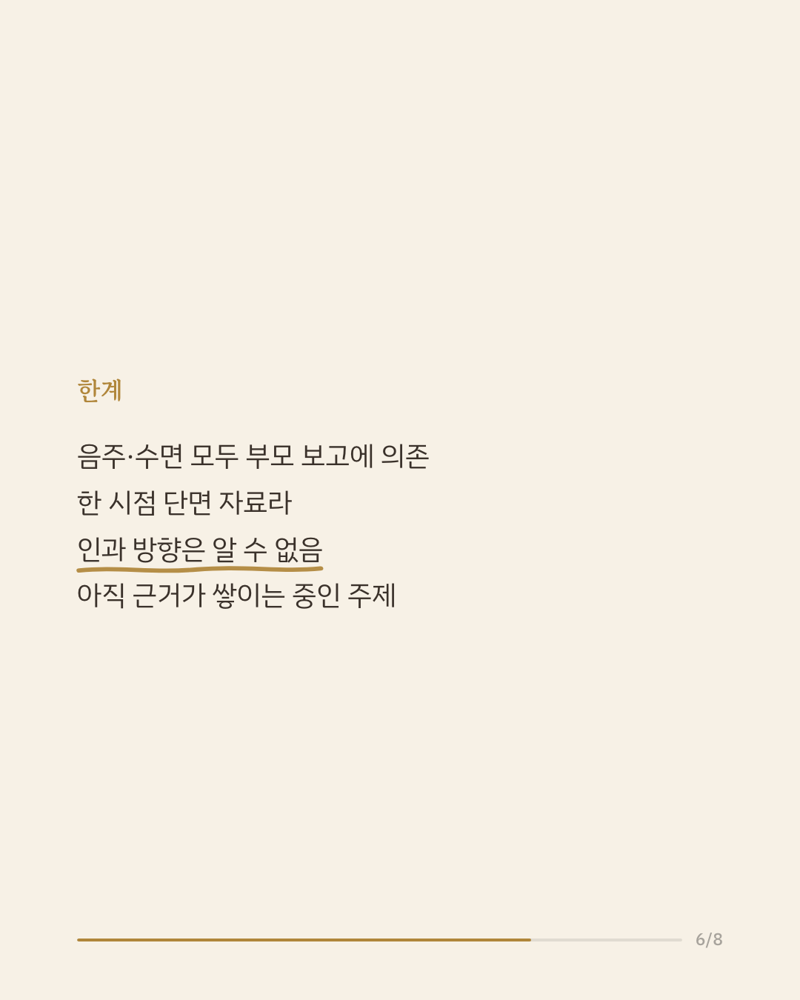
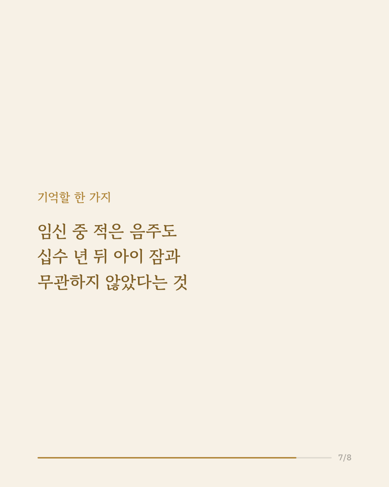
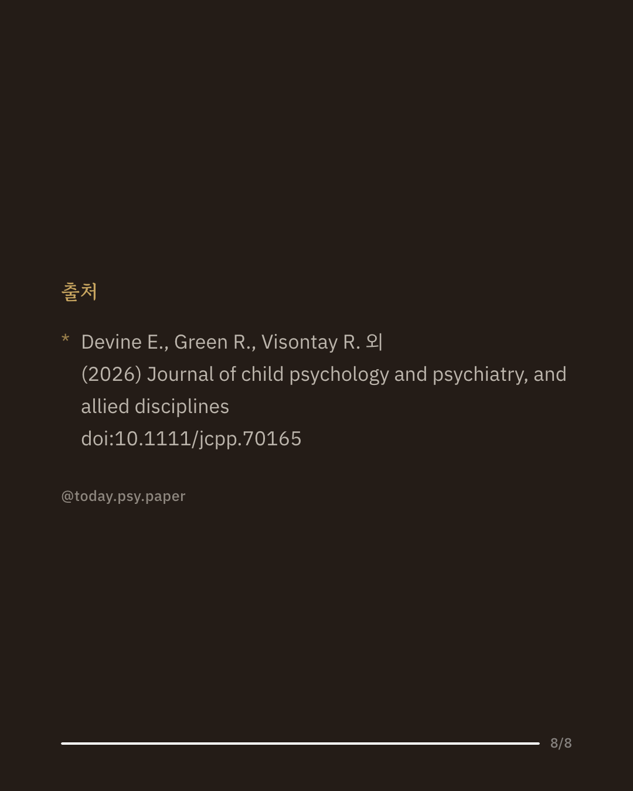

임신 중 음주가 태아에게 해롭다는 것은 잘 알려져 있지만, 지금까지의 근거는 대부분 많은 양의 음주와 어린 아이의 수면 문제에 집중돼 있었습니다. 적거나 중간 수준의 음주가 청소년기 수면에 어떤 영향을 주는지는 거의 연구되지 않았습니다. 이번 연구는 미국 ABCD 연구에 참여한 12~13세 청소년 1만 336명의 자료로, 임신 중 음주 여부와 양, 음주 패턴이 부모가 보고한 청소년 수면 문제와 어떻게 관련되는지 살펴봤습니다. 임신 중 음주에 노출된 청소년은 그렇지 않은 청소년보다 전반적인 수면 문제가 더 많았고, 특히 잠들고 깨는 전환, 과도한 졸림, 수면 중 호흡 영역에서 두드러졌습니다. 다만 적은 음주에서 많이 마실수록 더 나빠진다는 용량-반응 관계의 근거는 제한적이었고, 임신 사실을 알기 전 음주한 경우 임신 중 전혀 마시지 않은 경우보다 수면-각성 전환과 호흡 문제가 더 많았습니다. 연구진은 이 결과가 임신 중 안전한 음주량은 없다는 근거를 뒷받침하며, 가장 영향받는 수면 영역이 선별과 개입의 목표가 될 수 있다고 봤습니다. 다만 음주와 수면이 모두 부모 보고에 의존했고 한 시점만 관찰한 단면 연구라 인과관계는 확인할 수 없으며, 단일 연구이므로 확대 해석은 조심해야 합니다. 출처: Journal of Child Psychology and Psychiatry (2026), 'Associations between prenatal alcohol exposure and parent-reported sleep disturbances in 10,336 adolescents: an Adolescent Brain Cognitive Development study' #임상심리 #정신건강정보 #심리학연구 #태아알코올 #수면건강
python3 publish.py 42165753